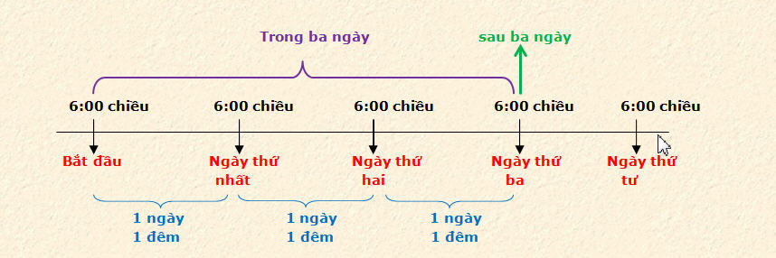

CHÚA JESUS CHỊU CHẾT VÀO NGÀY NÀO TRONG TUẦN
Trần Đình Tâm
A. Theo Thánh Kinh hay theo truyền thống?
Hầu hết Cơ-đốc nhân thuộc các hệ phái Tin Lành trên khắp thế giới đều tin rằng Chúa Jesus bị đóng đinh, chịu chết và được chôn trong phần mộ vào ngày Thứ Sáu và sống lại vào sáng sớm Chủ Nhật. Theo truyền thống, chúng ta chọn ngày Thứ Sáu để làm lễ kỷ niệm sự thương khó của Chúa Jesus và ngày Chủ Nhật kế đó kỷ niệm Chúa phục sinh. Tuy nhiên, có bao nhiêu Cơ-đốc nhân tự hỏi và tìm hiểu xem sự kiện Chúa Jesus chịu chết vào ngày Thứ Sáu và sống lại vào sáng Chủ Nhật mà các Hội Thánh ngày nay công bố có thật đúng với Thánh Kinh hay không?
B. Cách giải thích Chúa Jesus chịu chết vào ngày Thứ Sáu và sống lại vào sáng Chủ Nhật
Quan điểm cho rằng Chúa Jesus chịu chết vào ngày Thứ Sáu căn cứ trên phần Kinh Thánh sau đây:
“Bấy giờ là ngày sắm sửa, nghĩa là hôm trước ngày Sa-bát; khi đã chiều tối” (Mác 15:42)
Theo lời tường thuật của Mác, Chúa Jesus chết vào ngày sắm sửa (preparation day), ý nghĩa của ngày nầy sẽ được trình bày bên dưới. Ngày hôm sau của ngày sắm sửa là ngày Sa-bát, tức là ngày Thứ Bảy. Vậy, Chúa Jesus bị đóng đinh và chết vào ngày Thứ Sáu.
Theo bản ký thuật của Giăng, chúng ta cũng được biết những phạm nhân bị đóng đinh trên cây thập tự phải được đem xuống trước khi ngày Sa-bát đến. Thông thường các phạm nhân không chết liền ngay sau khi bị đóng đinh, nhưng cơn hấp hối kéo dài suốt cả ngày hoặc lâu hơn. Để giải quyết vấn đề nầy, chính quyền La-mã cho áp dụng biện pháp gọi là “crurifragium” tức là cho đáng gãy ống chân của phạm nhân, chỉ bằng cách nầy, phạm nhân sẽ chết ngay tức khắc. Giới lãnh đạo Do Thái muốn đem các phạm nhân xuống khỏi thập tự và chôn ngay trong ngày Thứ Sáu nên xin Phi-lát cho áp dụng “crurifragium”: “Vì bấy giờ là ngày sắm sửa về ngày Sa-bát, mà Sa-bát nầy là rất trọng thể, nên dân Giu-đa ngại rằng những thây còn treo lại trên thập tự giá trong ngày Sa-bát chăng, bèn xin Phi-lát cho đánh gãy ống chân những người đó và cất xuống.” (Giăng 19:31) (Chúng ta biết hai người phạm nhân bị đóng đinh bên cạnh Chúa Jesus bị đánh gãy ống chân, còn Chúa Jesus thì không vì Ngài đã chết trước đó rồi.)
Bằng chứng về Chúa Jesus sống lại vào sáng sớm ngày Chủ Nhật được căn cứ vào các câu Kinh Thánh sau:
“Sau ngày Sa-bát, ngày thứ nhứt trong tuần lễ, lúc tưng tưng sáng, có Ma-ri Ma-đơ-len và Ma-ri khác đến thăm mộ …” (Ma-thi-ơ 28:1)
“Vả, Đức Chúa Jesus đã sống lại buổi sớm mai ngày thứ nhứt trong tuần lễ, thì trước nhất hiện ra cho Ma-ri Ma-đơ-len, là người mà Ngài đã trừ cho khỏi bảy quỷ dữ.” (Mác 16:9)
C. Lời tuyên bố của Chúa Jesus về khoảng thời gian Ngài ở trong mộ phần
Một ngày nọ, một số thầy thông giáo và người Pha-ri-si tìm gặp Chúa Jesus và yêu cầu Chúa Jesus làm dấu lạ (sign) cho họ xem. Chúa Jesus trả lời cho họ: “Dòng dõi hung ác gian dâm nầy xin một dấu lạ, nhưng sẽ chẳng cho dấu lạ nào khác ngoài dấu lạ của Đấng tiên tri Giô-na. Vì Giô-na đã ở trong bụng cá lớn ba ngày ba đêm, cũng một thể ấy, Con người sẽ ở trong lòng đất ba ngày ba đêm.” (Ma-thi-ơ 12:39,40)
Giô-na 2:1 cho chúng ta biết “Đức Giê-hô-va sắm sẵn một con cá lớn đặng nuốt Giô-na; Giô-na ở trong bụng cá ba ngày ba đêm” Chúng ta thấy câu trả lời của Chúa Jesus như là lời tiên tri do chính Chúa Jesus tuyên phán về sự chết của Ngài: tương tự như Giô-na, Ngài sẽ ở trong phần mộ ba ngày ba đêm. Nói cách khác, Chúa Jesus đã cho chúng ta biết một cách chính xác khoảng thời gian kể từ lúc Ngài được chôn trong mộ phần cho đến lúc Ngài sống lại là ba ngày và ba đêm trọn, tức là 72 tiếng.
Theo quan điểm cho rằng Chúa Jesus chết vào ngày Thứ Sáu và sống lại vào sáng sớm Chủ Nhật, chúng ta hãy thử tính khoảng thời gian thân xác của Chúa nằm trong mộ phần như sau:
+ Từ 6:00 Chiều ngày Thứ Sáu đến 6:00 chiều Thứ Bảy: Một ngày + Một đêm = 24 tiếng.
+ từ 6:00 giờ chiều ngày Thứ Bảy đến 6:00 giờ sáng Chủ Nhật: Một đêm = 12 tiếng
Tổng cộng thời gian thân xác Chúa Jesus nằm trong mộ chỉ có một ngày rưỡi (24 tiếng+12 tiếng=36 tiếng) hoặc một ngày hai đêm. Con số nầy hoàn toàn khác biệt với lời tuyên bố của Chúa Jesus rằng Ngài sẽ ở trong mộ ba ngày ba đêm.
Làm thế nào để giải quyết sự khác biệt nêu trên? Chúng ta sẽ căn cứ vào tất cả những dữ liệu được nêu lên trong Thánh Kinh có liên quan đến sự chết, sự chôn và sự sống lại của Chúa Jesus để tìm ra câu trả lời thỏa đáng.
D. Những cách diển tả khác nhau về khoảng thời gian Chúa Jesus nằm trong mộ
Theo cách sử dụng ngôn ngữ để diễn tả khoảng thời gian Chúa Jesus bị chôn trong phần mộ cho đến lúc Chúa phục sinh, Kinh Thánh đã dùng đến 4 cách khác nhau như sau:
1. Trong ba ngày (in three days): Được dùng trong Giăng 2:19,21 là lời của chính Chúa Jesus nói: “Hãy phá đền thờ nầy đi, trong ba ngày ta sẽ dựng lại… Ngài nói về đền thờ của thân thể mình.”
2. Ngày thứ Ba (the third day): Được dùng ở Ma-thi-ơ 20:19 “Họ sẽ nộp Ngài cho dân ngoại … đến ngày thứ ba, Ngài sẽ sống lại”. Cách dùng cụm từ “đến ngày thứ ba” còn được dùng ở Ma-thi-ơ 16:21; 17:23; Lu-ca 24:7; I Cô-rinh-tô 15:4 và Công Vụ Các Sứ Đồ 10:40
3. Sau ba ngày (after three days): Được dùng ở Ma-thi-ơ 27:63, là lời của các thầy tế lễ và người Pha-ri-si nói với Phi-lát “Thưa chúa, chúng tôi nhớ người gian dối nầy, khi còn sống nó nói rằng: khỏi ba ngày thì ta sẽ sống lại”
4. Ba ngày và ba đêm (three days and three nights): Được dùng ở Ma-thi-ơ 12:40, đây là lời phán từ chính môi miệng Chúa Jesus: “Vì Giô-na đã ở trong bụng cá lớn ba ngày ba đêm, cũng một thể ấy, Con người sẽ ở trong lòng đất ba ngày ba đêm”
Dù Thánh Kinh có dùng 4 cách diễn tả khác nhau nhưng chúng ta phải tin chắc rằng tất cả đều nói đến một khoảng thời gian mà thôi. Chúng ta không thể chọn lấy một hoặc hai cách diễn tả nào đó theo ý muốn riêng vì nó phù hợp với quan điểm của mình mà phủ nhận những cách còn lại. Khi chúng ta phân tích mỗi cách nói, chúng ta sẽ thấy Kinh Thánh không hề có sự mâu thuẩn:
+ Về cách nói “ba ngày ba đêm”: Một ngày trọn phải bao gồm “ngày” và “đêm”, tức là gồm đủ 24 tiếng đồng hồ. Vậy, “ba ngày ba đêm” có ý nhấn mạnh đến ba ngày trọn, tức là 72 tiếng đồng hồ. Chúng ta có thể kết luận rằng Chúa Jesus phải ở trong phần mộ trọn 3 ngày (72 tiếng) theo đúng như cách Ngài đã tuyên bố trong Ma-thi-ơ 12:40.
+ Về cách nói “sau ba ngày” : Điều nầy có nghĩa là ngay sau khi hoàn tất trọn 3 ngày (hoặc ba ngày ba đêm) ở trong phần mộ thì Chúa Jesus phục sinh.
+ Về lý thuyết “trong 3 ngày”: Là cách diển tả tương tự như 3 ngày 3 đêm, tức là nói đến điều gì đó xãy ra trong giới hạn ba ngày, không kéo dài hơn được.
+ Về cách nói “ngày thứ ba”: Xin minh họa bằng câu chuyện lịch sử được ghi lại trong II Sử Ký đoạn 10: Giê-rô-bô-am và dân Y-sơ-ra-ên đến gặp vua Rô-bô-am để thỉnh cầu Vua một việc, là xin vua giảm nhẹ việc lao động và thuế khóa cho người dân. Rô-bô-am trả lời: “ Khỏi ba ngày (after three days) các ngươi hãy trở lại cùng ta. Dân sự bèn lui về” (II Sử Ký 10:5) rồi sau đó, theo đúng lời vua dặn, Giê-rô-bô-am và các đại diện của dân Y-sơ-ra-ên đến gặp vua Rô-bô-am, Thánh Kinh ghi lại như sau: “Ngày thứ ba (the third day), Giê-rô-bô-am và cả dân sự đều đến cùng Rô-bô-am y như vua đã dặn biểu rằng: Hãy trở lại cùng ta trong ngày thứ ba” (II Sử Ký 10:12)
Căn cứ vào hai câu chuyện trên và cách mô tả ngày của người đương thời, chúng ta thấy rõ cách nói “khỏi ba ngày” và cách nói “ngày thứ ba” đều hoàn toàn tương tự như nhau.
Một ví dụ khác: Sau khi xác của Chúa Jesus được chôn trong mộ, các thầy tế lễ và người Pha-ri-si đến Phi-lát để yêu cầu: “Thưa chúa, chúng tôi nhớ người gian dối nầy (họ ám chỉ Chúa Jesus), khi còn sống, có nói rằng: Khỏi ba ngày (after three days) thì ta sẽ sống lại. Vậy, xin hãy cắt người canh mộ cẩn thận cho đến ngày thứ ba (the third day), kẻo môn đồ nó đến lấy trộm xác đi, rồi nói rằng: Ngài đã từ kẻ chết sống lại…” (Ma-thi-ơ 27:63,64). Một lần nữa, chúng ta hiểu rằng cách nói “ngày thứ ba” có nghĩa là sau ba ngày trọn.
Hình minh họa sau đây sẽ giúp chúng ta hiểu cách diển tả khoảng thời gian của dân Do Thái trong thời đại Thánh Kinh:

Ghi chú về hình minh họa bên trên:
+ Chữ màu đen: 6:00 chiều: Chỉ về thời điểm ngày bắt đầu.
Ngày của người Do Thái được mô tả trong Kinh Thánh khác với ngày của chúng ta hôm nay như sau: Lúc mặt trời lặn, khoảng 6:00 chiều là lúc chấm dứt ngày hôm đó và bắt đầu bước qua ngày mới; một ngày mới bắt đầu từ lúc mặt trời lặn và chấm dứt vào lúc mặt trời lặn của ngày hôm sau. Ý niệm nầy đã có kể từ khi Đức Chúa Trời dựng nên thế giới: Trong sáu ngày Đức Chúa Trời dựng nên vủ trụ và muôn vật, Kinh Thánh ghi lại đủ cả sáu lần: “Vậy có buổi chiều và buổi mai, ấy là ngày thứ nhất.” … “Vậy, có buổi chiều và buổi mai, ấy là ngày thứ sáu.” (Sáng Thế Ký 1:5, 31). Như vậy, ngày theo Kinh Thánh bắt đầu bằng buổi chiều, được tính kể từ lúc mặt trời lặn.
+ Chữ màu đỏ: chỉ cách nói “đến ngày thứ ba”
+ Chữ màu xanh: Chỉ cách nói “ba ngày ba đêm”
+ Chữ màu tím: Chỉ cách nói “trong ba ngày”
+ Chữ màu xanh lá: Chỉ cách nói “sau ba ngày”
E. Lý thuyết về một phần trong ngày cũng được kể là một ngày trọn
Nếu Chúa Jesus chết và được đặt trong mộ đúng vào ngày Thứ Sáu như hầu hết Cơ-đốc nhân đã tin chắc từ bao lâu nay, thì như đã đề cập bên trên, Chúa Jesus chỉ ở trong mộ có 36 tiếng đồng hồ (hay một ngày rưỡi), trong khi Chúa Jesus tuyên bố Ngài sẽ nằm trong mộ ba ngày ba đêm. Để hóa giải sự khác biệt nầy, những người theo quan điểm Chúa chết vào ngày Thứ Sáu giải thích như sau: Theo cách tính của người Do Thái đương thời, một phần trong ngày cũng được kể là một ngày trọn. Cách lý giải nầy nhằm để giải thích cho cách nói “đến ngày thứ ba”. Theo cách tính nầy chúng ta thấy:
+ Chúa Jesus chết trên thập tự vào khoảng giờ thứ chín, tức là khoảng 3:00 chiều. Sau đó thân thể của Chúa được đem xuống, tẩm liệm và gấp rút đem đặt trong ngôi mộ sau cho việc chôn cất được hoàn tất trước khi mặt trời lặn (trước 6:00 giờ chiều ngày Thứ Sáu). Khoảng thời gian đó cũng được kể là một ngày trọn = Ngày thứ nhất
+ Từ 6:00 giờ chiều ngày Thứ Sáu đến 6:00 chiều ngày Thứ Bảy = Ngày thứ hai
+ Từ 6:00 giờ chiều ngày Thứ Bảy đến sáng sớm Chủ Nhật = Ngày thứ ba
Cách giải thích nêu trên rất khó có thể chấp nhận được vì những lý do sau:
Thứ nhất, không có chổ nào trong Kinh Thánh chứng minh được rằng cách tính ngày nêu trên là cách tính của người Do Thái đương thời. Ngược lại, chính Kinh Thánh đã chứng minh rằng “ngày thứ ba” là tương đương với “sau ba ngày”, mà “sau ba ngày” chỉ ra rõ “sau 72 tiếng đồng hồ” (Xin xem lại phần trình bày bên trên, về hai câu chuyện để minh họa), đó mới chính là cách tính ngày của người Do Thái đương thời.
Thứ hai, khó mà chấp nhận rằng một phần trong ngày cũng được kể như trọn một ngày. Chúa Jesus đã nói Ngài sẽ ở trong lòng đất ba ngày ba đêm, Kinh Thánh cũng chứng nhận rằng “buổi chiều và buổi mai” là một ngày trọn (24 tiếng đồng hồ). Chúa Jesus không thể nói sai được.
Thứ ba, trong cuộc sáng tạo trời đất vào cuối ngày thứ ba, chúng ta đọc thấy: “Vậy, có buổi chiều và buổi mai, ấy là ngày thứ ba” (Sáng Thế Ký 1:13), “ngày thứ ba” gồm “buổi chiều” và “buổi mai”, là một ngày trọn, không thể nào là “một phần” của ngày được.
Thứ tư, những người tin rằng Chúa Jesus chết vào ngày Thứ Sáu sẽ không thể giải thích được trường hợp sau:
Mác 16:1 cho biết: “Ngày Sa-bát qua rồi, Ma-ri Ma-đơ-len, Ma-ri mẹ Gia-cơ, cùng Sa-lô-mê mua thuốc thơm đặng đi xức xác Đức Chúa Jesus”
Ma-thi-ơ 28:1 cho biết: “Sau ngày Sa-bát, ngày thứ nhất trong tuần lễ, lúc tưng tưng sánh, có Ma-ri Ma-đơ-len và các ma-ri khác đến thăm mộ.”
Luca 24:1 cho biết: “Ngày thứ nhất trong tuần lễ, khi mờ sáng, các người đàn bà ấy lấy thuốc thơm đã sửa soạn đem đến mộ ngài.”
Điều không thể giải thích được là: Trong ngày Sa-bát (từ 6:00 chiều ngày Thứ Sáu cho đến 6:00 chiều ngày Thứ Bảy), là ngày nghỉ, các bà không thể đi mua thuốc thơm được và cũng không ai bán, nên Mác 16:1 cho biết phải đợi hết ngày Sa-bát các bà mới có thể đến chợ mua thuốc thơm. Thế nhưng Ma-thi-ơ và Lu-ca lại cho biết sau ngày Sa-bát, lúc trời còn mờ tối, các bà đem theo thuốc thơm đã mua sẵn để đến mộ. Các bà đến chợ mua thuốc thơm vào lúc nào?
G. Quan điểm về hai ngày Sa-bát khác nhau
Giăng 19:31 là câu chìa khóa để giải quyết vấn đề:
“Vì bấy giờ là ngày sắm sửa về ngày Sa-bát, mà Sa-bát nầy là rất trọng thể …”
Ngày Chúa Jesus bị xét xử, bị kết tội tại tòa án Phi-lát, bị đóng đinh … tất cả những diển biến ấy đều xãy ra trong ngày gọi là ngày sắm sửa (preparation day), là ngày dân Do Thái chuẩn bị cho ngày hôm sau, là ngày Sa-bát, đây không phải là là Sa-bát thông thường nhưng là ngày Sa-bát đặc biệt quan trọng, nên người Do Thái xem đó là ngày Sa-bát rất trọng thể (high day). Việc giữ ngày Sa-bát trọng thể nầy được quy định rõ trong luật pháp do Đức Chúa Trời ban hành, được ghi chép trong Lê-vi Ký đoạn 23:
“Đến ngày mười bốn tháng giêng, vào buổi chiều tối, ấy là lễ Vượt Qua của Đức Giê-hô-va.” (Lê-vi Ký 23:5)
Ngày 14 tháng giêng (tháng 1) là ngày lễ Vượt Qua của dân Do Thái, còn gọi là ngày 14 tháng Ni-san (Nissan) theo niên lịch của Do Thái (tháng Ni-san tương đương với tháng 3 hoặc tháng 4 theo lịch của chúng ta ngày nay). Xin đọc Xuất Ê-díp-tô Ký 12:1-11 để biết rõ nguồn gốc của Lễ Vượt Qua.
“Qua ngày rằm tháng nầy, ấy là lễ bánh không men để kính trọng Đức Giê-hô-va; các ngươi sẽ ăn bánh không pha men trong bảy ngày.” (Lê-vi Ký 23:6)
“Ngày rằm” là ngày kế tiếp ngày lễ Vượt Qua, tức là ngày 15 tháng giêng (hay ngày 15 tháng Ni-san): Đây chính là ngày khởi đầu của 7 ngày gọi là lễ bánh không men, trong 7 ngày dân Y-sơ-ra-ên ăn bánh không có men.
“Ngày đầu, các ngươi sẽ có một sự nhóm hiệp thánh, nên chẳng nên làm một công việc xác thịt.” (Lê-vi Ký 23:7)
“Ngày đầu” là ngày đầu tiên trong loạt 7 ngày lễ ăn bánh không men, cũng là ngày 15 tháng Ni-san, trong ngày nầy, Đức Chúa Trời quy định cho người dân không được làm công việc gì của xác thịt, và Lê-vi Ký 23:32 cho biết: “Ấy sẽ là một lễ Sa-bát, một ngày nghỉ cho các ngươi…”. Như vậy, Đức Chúa Trời quy định có những ngày lễ cho dân Do Thái, trong đó có một ngày nghỉ hoàn toàn nên cũng được gọi là ngày Sa-bát; những ngày “lễ” Sa-bát (high day) nầy có thể rơi vào bất cứ ngày nào trong tuần, chứ không hẵn nó phải là ngày Thứ Bảy (Ví dụ, người ta cho rằng 25 tháng 12 là ngày Chúa giáng sanh, ngày nầy có thể rơi vào bất cứ ngày nào trong tuần, như Thứ Hai, Thứ Ba, Thứ Tư …).
Dân Số Ký 28:16-18 nhắc lại quy định của Đức Chúa Trời về ngày Lễ Vượt Qua, lễ ăn bánh không men, và ngày nghỉ: “Ngày mười bốn tháng giêng, phải giử lễ Vượt Qua cho Đức Giê-hô-va. Qua ngày mười lăm sẽ là ngày lễ; phải ăn bánh không men trong bảy ngày. Ngày thứ nhất các ngươi sẽ có sự hội hiệp thánh: chớ nên làm một công việc xác thịt nào”
Như vậy, Thánh Kinh cho biết có hai loại ngày Sa-bát: ngày Sa-bát thông thường là ngày Thứ Bảy mỗi tuần, và ngày lễ Sa-bát, cũng là ngày nghỉ, do Đức Chúa Trời quy định, có thể rơi vào bất cứ ngày nào trong tuần. Theo niên lịch của người Do Thái, ngày lễ Sa-bát ngay sau lễ Vượt Qua thường rơi nhiều vào ngày Thứ Ba và Thứ Năm hơn những ngày khác.
Ma-thi-ơ 28:1 là bằng chứng cho thấy có hai ngày Sa-bát: “Sau ngày Sa-bát, ngày thứ nhất trong tuần lễ, lúc tưng tưng sáng, có Ma-ri Ma-đơ-len và Ma-ri khác đến thăm mộ.” Trong nguyên văn Hy-lạp, từ “Sa-bát” ở số nhiều (Sabbaths), điều nầy cho thấy có hai ngày Sa-bát trong tuần lễ Chúa chịu thương khó: Một là ngày kế sau lễ Vượt Qua và một là ngày Thứ Bảy thông thường.
H. Chúa Jesus chịu chết vào ngày nào?
Từ những bằng chứng nêu trên, chúng ta có thể ghi nhận một vài sự kiện quan trọng sau đây:
+ Ngày 14 tháng Ni-san là ngày lễ Vượt Qua, cũng là ngày sắm sửa, hay chuẩn bị (preparation day) cho ngày Sa-bát trọng thể, là ngày hôm sau.
+ Ngày 15 tháng Ni-san là ngày thứ nhất (trong 7 ngày) của lễ bánh không men, và cũng là ngày Sa-bát trọng thể.
+ Khi Chúa Jesus bị xét xử tại phiên tòa Phi–lát, Giăng 19:14 cho biết: “Vả, bấy giờ là ngày sắm sửa về lễ Vượt Qua (the praparation of the Passover), độ chừng giờ thứ sáu. Phi-lát nói cùng dân Gia-đa rằng: Vua các ngươi kia kìa.” Và Sứ đồ Phao-lô tuyên bố: “Vì Đấng Christ là con sinh lễ Vượt Qua của chúng ta, đã bị giết rồi.” (I Cô-rinh-tô 5:7)
Đến đây, chúng ta có thể khẳng định rằng Chúa Jesus bị đóng đinh và chết vào ngày lễ Vượt Qua.
Và điều chính Chúa Jesus tuyên bố rằng Ngài sẽ ở trong mộ trọn ba ngày ba đêm, chúng ta biết Chúa Jesus không thể nói sai được, như vậy Chúa Jesus chịu chết vào ngày Thứ Tư. Chỉ có kết luận như vậy, mới giải tỏa được tất cả những điểm mâu thuẩn hay khác biệt được mô tả trong các sách Tin Lành.
Theo cách giải thích nầy, ngày Sa-bát theo sau ngày Chúa Jesus chết không phải là ngày Sa-bát thông thường (Thứ Bảy), nhưng là ngày Sa-bát trọng thể (Giăng 19:31), rơi vào ngày Thứ Năm. Chúng ta ghi nhận tất cả những diển biến trong ngày cuối cùng của Chúa Jesus và qua đó xác định được thời gian Chúa Jesus nằm trong mộ như sau:
1. Chiều Thứ Ba (6:00 giờ) đến chiều Thứ Tư (6:00 giờ): Lễ Vượt Qua, cũng là ngày sắm sửa.
+ Tối Thứ Ba cho đến 9:00 giờ sáng Thứ Tư: Chúa Jesus và các Sứ Đồ ăn lễ Vượt Qua (Ma- thi-ơ 26:20); Chúa lập Tiệc Thánh (Ma-thi-ơ 26:26-29); Chúa đến vườn Ghết-sê-ma-nê cầu nguyện với các Sứ Đồ (Ma-thi-ơ 26:36); Giu-đa Ích-ca-ri-ốt dẫn một nhóm người do giới lãnh đạo Do Thái sai đi để bắt Chúa Jesus (Ma-thi-ơ 26:47); Chúa Jesus bị giải đến An-ne (Giăng 18:12-14); Chúa bị giải đến nhà thầy tế lễ thượng phẩm Cai-phe (Ma-thi-ơ 26:57); Chúa bị đánh và bị chế giểu tại nhà Cai-Phe (Lu-ca 22:63-65); Chúa bị giải đến tòa công luận vào sáng sớm (Lu-ca 22:66-71); Chúa bị giải đến quan tổng đốc Phi-lát (Mác 15:1); Chúa bị giải đến vua Hê-rốt (Lu-ca 23:7); Chúa bị chế giểu bởi quân lính của vua Hê-rốt (Lu-ca 23:11); Chúa bị giải trở lại Phi-lát để chịu xét xử lần cuối (Lu-ca 23:11); Chúa bị đánh đòn do lệnh của Phi-lát (Giăng 19:1); Chúa bị quân lính La-mã chế giểu bằng cách cho Ngài đội mão gai và bị đánh (Giăng 19:2,3); Chúa bị kết án và bị dẫn đi đóng đinh (Giăng 19:16).
+ 9:00 giờ sáng: Chúa bị đóng đinh (Mác 15:25)
+ 12:00 giờ trưa: Cả xứ trở nên tối tăm cho đến 3:00 chiều (Mác 15:33)
+ 3:00 giờ chiều: Chúa Jesus trút linh hồn (Lu-ca 23:44-46).
+ Sau 3:00 giờ: Xác của Chúa được gấp rút đặt trong mộ trước 6:00 giờ chiều. Theo Ma- thi-ơ 27:57 và Mác 15:42 thì thời gian còn lại rất ngắn ngủi vì có những sự kiện xãy ra và một số công việc cần phải làm kể từ lúc Chúa tắt hơi: Cơn động đất (Ma-thi-ơ 27:51); Giới lãnh đạo Do Thái phải đến gặp Phi-lát để xin phép cho đánh gãy ống chân các phạm nhân (Giăng 19:31b); Lính La-mã thi hành “crurifragium” đối với hai phạm nhân ở hai bên Chúa (Giăng 19:32); Chúa bị tên lính La-mã đâm ngọn giáo vào hông (Giăng 19:34); Giô-sép người A-ri-ma thê đến gặp Phi-lát để xin phép được lấy xác Chúa Jesus, lúc ấy trời đã về chiều (Mác 15:43); Phi-lát yêu cầu thầy đội La-mã đến để báo cáo về cái chết của Chúa Jesus (Mác 15:44); Sau đó mới cho phép Giô-sép lấy xác (Mác 15:45); Việc đem xác Chúa Jesus xuống khỏi cây thập tự, tẩm liệm xác, đem đặt vào trong mộ và cuối cùng lăn hòn đá lớn để đóng cửa mộ lại, tất cả những thủ tục trên đòi hỏi nhiều thời gian (Mác 15:46); Ngoài ra, chúng ta cũng được biết Ni-cô-đem cùng với Giô- sép lo việc an táng Chúa Jesus (Giăng 19:39,40).
Kinh Thánh không cho chúng ta biết vào lúc mấy giờ thì công việc an táng Chúa Jesus được hoàn tất, nhưng căn cứ vào một loạt các sự việc nêu trên, chúng ta có thể đoán rằng công việc an táng Chúa hoàn tất ngay vào những phút cuối cùng trong ngày, tức là ngay trước lúc mặt trời lặn.
2. Chiều Thứ Tư (6:00 giờ) đến chiều Thứ Năm (6:00 giờ): Ngày đầu ăn bánh không men, cũng là ngày Sa-bát trọng thể. Chúa Jesus ở trong mộ được một ngày một đêm.
3. Chiều Thứ Năm (6:00 giờ) đến chiều Thứ Sáu (6:00 giờ): Ngày Sa-bát chấm dứt. Các phụ nữ đi mua thuốc thơm (Mác 16:1). Chúa Jesus nằm trong mộ được hai ngày hai đêm.
4. Chiều Thứ Sáu (6:00 giờ) đến chiều Thứ Bảy (6:00 giờ): Là Ngày Sa-bát thông thường. Chúa Jesus nằm trong mộ được ba ngày ba đêm.
5. Ngay sau khi ngày Thứ Bảy chấm dứt (6:00 chiều), tức là vừa bước qua ngày thứ nhất (Chủ Nhật) Chúa Jesus sống lại vì Ngài đã nằm trong mộ đúng ba ngày ba đêm.
I. Chúa Jesus sống lại vào buổi sáng Chủ Nhật?
Theo truyền thống, đại đa số Cơ-đốc nhân tin rằng Chúa Jesus phục sinh vào sáng sớm ngày Chủ Nhật, tuy nhiên, nếu đọc kỹ Lời Chúa, chúng ta sẽ thấy không đúng như điều mà bấy lâu nay chúng ta tin tưởng:
“Ngày thứ nhất trong tuần lễ, khi mờ sáng, các người đàn bà ấy lấy thuốc thơm đã sửa soạn đem đến mộ Ngài. Họ thấy hòn đá đã lăn ra khỏi cửa mộ, nhưng bước vào không thấy xác Đức Chúa Jesus” (Lu-ca 24:1-3)
“Ngày thứ nhất trong tuần lễ, sáng sớm, mặt trời mới mọc, ba người đến nơi mộ.” (Mác 16:2)
Hãy chú ý: Các bà đi thăm mộ lúc trời còn mờ mờ sáng, khi đến mộ, các bà thấy cửa mộ đã mở ra từ lúc nào rồi, các bà không thấy xác Chúa Jesus ở đâu mà chỉ thấy ngôi mộ trống không. Điều nầy cho thấy Chúa Jesus đã sống lại từ trước đó rồi, trước khi mặt trời mọc, trước khi buổi sáng bắt đầu. Do đó, chúng ta không thể nói rằng Chúa Jesus sống lại vào buổi sáng Chủ Nhật.
Sau đó, các bà gặp thiên sứ, thiên sứ nói với các bà rằng:
“Ngài sống lại rồi, chẳng còn ở đây (He is risen; He is not here)” (Mác 16:6)
Chúng ta thấy rõ các bà được thiên sứ thông báo là Chúa đã sống lại rồi, các bà cũng như bất cứ người nào khác, không một ai chứng kiến được giây phút Chúa Jesus đang sống lại. Câu trả lời phải là Chúa Jesus đã sống lại vào chiều Thứ Bảy, ngay sau 6:00 giờ, là lúc chấm dứt ngày Sa-bát và bước qua ngày thứ nhất (vì ngày Thứ Nhất trong tuần lễ bắt đầu lúc 6:00 chiều của ngày Thứ Bảy cho đến 6:00 chiều ngày Chủ Nhật), đúng như lời Ngài đã tuyên bố: “Con người sẽ ở trong lòng đất ba ngày ba đêm.”
K. Kết Luận
Sự việc đa số Cơ-đốc nhân ngày nay hiểu không đúng về ngày Chúa chịu chết cũng như ngày Chúa phục sinh thật ra không phải là điều quan trọng, vì không ảnh hưởng gì hết đến đức tin của chúng ta nơi Chúa Jesus; không phải vì sự hiểu biết không chính xác về ngày mà chúng ta mắc tội với Chúa hay mất đi những phước hạnh trong Chúa. Tuy nhiên, nếu chúng ta biết đúng thì vẫn tốt hơn!
Bài viết nầy chỉ nhằm giúp các con dân Chúa có cơ hội tìm hiểu thêm về những gì có liên quan đến cuộc đời của Chúa Jesus, và phải chăng sự chết và sự sống lại của Ngài là hai điều mang nhiều ý nghĩa nhất đối với chúng ta?
Tháng 2, 2011